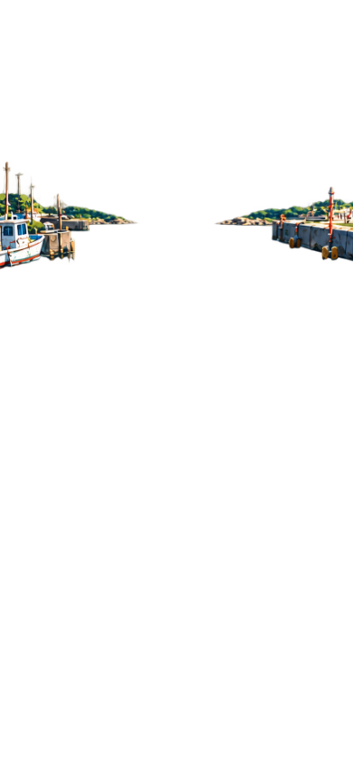
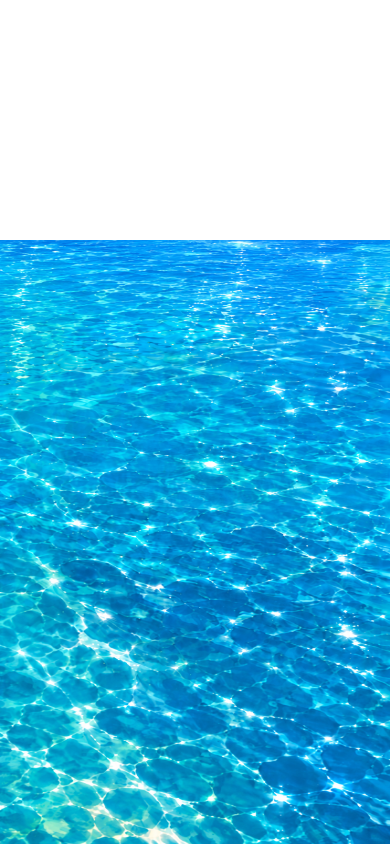
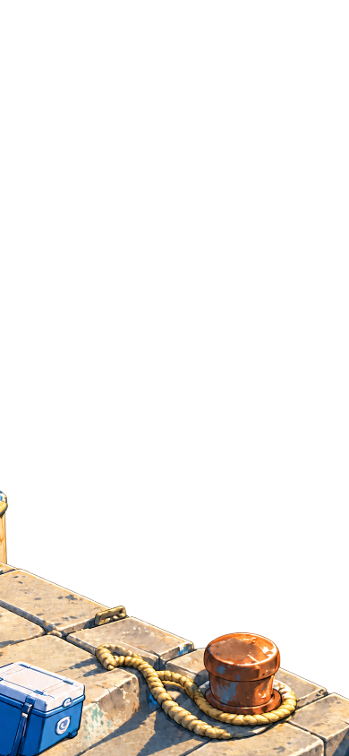
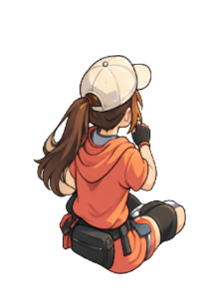
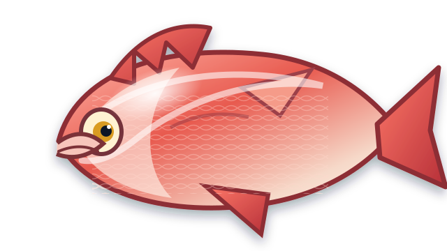

待機idle
PLAYABLE MOTION STUDY · v1
同一キャラクター 4状態
- 状態
- cast
- 実行
- 停止
- 二重再生
- guard ready
キャラクター・ロッド・釣果魚は別レイヤー。足元ピボットは全フレーム共通 (160, 400)。





PLAYABLE MOTION STUDY · v1
キャラクター・ロッド・釣果魚は別レイヤー。足元ピボットは全フレーム共通 (160, 400)。